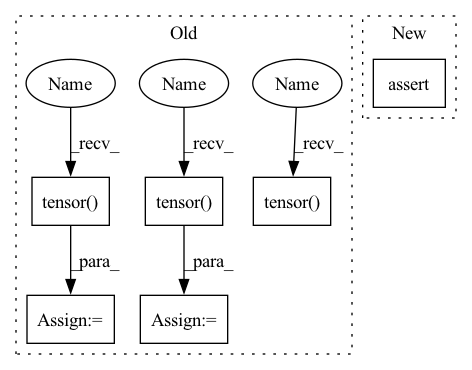

Pattern ID :39398
Before Change
assert pos.shape == (z.shape[0], 3)
assert conf["formation_energy"].attrs["units"] == "eV"
y = pt.tensor( conf["formation_energy"][()], dtype=pt.float64)
assert y.shape == ()
assert conf["forces"].attrs["units"] == "eV/Å"
neg_dy = pt .tensor( conf["forces"][...], dtype=pt.float32)
assert neg_dy.shape == pos.shape
assert conf["partial_charges"].attrs["units"] == "e"
pq = pt.tensor(conf["partial_charges"][:], dtype=pt.float32)
assert pq.shape == z.shape
assert conf["dipole_moment"].attrs["units"] == "e*Å"
dp = pt .tensor( conf["dipole_moment"][:], dtype=pt.float32)
assert dp.shape == (3,)
// Skip samples with large forces
if self.max_gradient:After Change
assert "name" in h5.attrs
mols = h5.items()
elif version == "2.0":
assert len(h5.keys()) == 0
mols = list(h5.values())[0].items()
else:
raise RuntimeError(f"Unsuported layout verions: {version}")In pattern: SUPERPATTERN
Frequency: 3
Non-data size: 6
Instances Fragment ID: 111867562
Project Name: torchmd/torchmd-net
Commit Name: fdbbd9d91ea0ec8e8a0ea2ec63be8b8bd2e4cb61
Time: 2022-10-17
Author: r.galvelis@acellera.com
File Name: torchmdnet/datasets/ace.py
M Class Name: Ace
N Class Name: Ace
M Method Name: sample_iter(2)
N Method Name: sample_iter(2)
M Parent Class: Dataset
N Parent Class: Dataset
M File Name: torchmdnet/datasets/ace.py
N File Name: torchmdnet/datasets/ace.py
M Start Line: 81
M End Line: 125
N Start Line: 110
N End Line: 140
Before Change
assert y.shape == ()
assert conf["forces"].attrs["units"] == "eV/Å"
neg_dy = pt.tensor( conf["forces"][...], dtype=pt.float32)
assert neg_dy.shape == pos.shape
assert conf["partial_charges"].attrs["units"] == "e"
pq = pt.tensor( conf["partial_charges"][:], dtype=pt.float32)
assert pq.shape == z.shape
assert conf["dipole_moment"].attrs["units"] == "e*Å"
dp = pt.tensor( conf["dipole_moment"][:], dtype=pt.float32)
assert dp.shape == (3,)
// Skip samples with large forces
if self.max_gradient:After Change
assert "name" in h5.attrs
mols = h5.items()
elif version == "2.0":
assert len(h5.keys()) == 0
mols = list(h5.values())[0].items()
else:
raise RuntimeError(f"Unsuported layout verions: {version}") Fragment ID: 111867563
Project Name: torchmd/torchmd-net
Commit Name: fdbbd9d91ea0ec8e8a0ea2ec63be8b8bd2e4cb61
Time: 2022-10-17
Author: r.galvelis@acellera.com
File Name: torchmdnet/datasets/ace.py
M Class Name: Ace
N Class Name: Ace
M Method Name: sample_iter(2)
N Method Name: sample_iter(2)
M Parent Class: Dataset
N Parent Class: Dataset
M File Name: torchmdnet/datasets/ace.py
N File Name: torchmdnet/datasets/ace.py
M Start Line: 81
M End Line: 125
N Start Line: 110
N End Line: 140
Before Change
continue
assert conf["positions"].attrs["units"] == "Å"
pos = pt.tensor( conf["positions"], dtype=pt.float32)
assert pos.shape == (z.shape[0], 3)
assert conf["formation_energy"].attrs["units"] == "eV"
y = pt.tensor(conf["formation_energy"][()], dtype=pt.float64)
assert y.shape == ()
assert conf["forces"].attrs["units"] == "eV/Å"
dy = -pt.tensor(conf["forces"], dtype=pt.float32)
assert dy.shape == pos.shape
assert conf["partial_charges"].attrs["units"] == "e"
pq = pt.tensor( conf["partial_charges"], dtype=pt.float32)
assert pq.shape == z.shape
assert conf["dipole_moment"].attrs["units"] == "e*Å"
dp = pt.tensor( conf["dipole_moment"], dtype=pt.float32)
assert dp.shape == (3,)
// Skip samples with large forces
if self.max_gradient:After Change
for path in tqdm(self.raw_paths, desc="Files"):
h5 = h5py.File(path)
assert h5.attrs["layout"] == "Ace"
version = h5.attrs["layout_version"]
mols = None Fragment ID: 111867560
Project Name: torchmd/torchmd-net
Commit Name: d23e6500f2cef1fa56d6c99ce5fdb983f1379bca
Time: 2022-10-28
Author: peastman@stanford.edu
File Name: torchmdnet/datasets/ace.py
M Class Name: Ace
N Class Name: Ace
M Method Name: sample_iter(2)
N Method Name: sample_iter(1)
M Parent Class: Dataset
N Parent Class: Dataset
M File Name: torchmdnet/datasets/ace.py
N File Name: torchmdnet/datasets/ace.py
M Start Line: 72
M End Line: 123
N Start Line: 144
N End Line: 206
Before Change
def test_forward(self, post):
Setup
detection = torch.tensor( [[0.1, 0.0], [0.6, 0.05]]) .unsqueeze(0).unsqueeze(0)
features = torch.tensor( [[1., 2.], [3., 4.]]) .unsqueeze(0).unsqueeze(0).repeat(1, 5, 1, 1)
features = features * torch.tensor( [1., 2., 3., 4., 5.]) .unsqueeze(0).unsqueeze(-1).unsqueeze(-1)
pseudo_net_ouput = torch.cat((detection, features), 1)
After Change
assert (emitter_out.frame_ix == 0).all()
assert (emitter_out.phot.unique() == torch.tensor([1., 3.])).all()
assert not torch.isnan(emitter_out.xyz_sig).any(), "Sigma values for xyz should not be nan."
assert not torch.isnan(emitter_out.phot_sig).any(), "Sigma values for phot should not be nan."
assert torch.isnan(emitter_out.bg_sig).all()
Fragment ID: 111867522
Project Name: turagalab/decode
Commit Name: 1e766f0eba6bedb58f5682875993463a5d648ea6
Time: 2021-01-17
Author: lucas.mueller@embl.de
File Name: decode/test/test_post_processing.py
M Class Name: TestLookUpPostProcessing
N Class Name: TestLookUpPostProcessing
M Method Name: test_forward(3)
N Method Name: test_forward(2)
M Parent Class: TestPostProcessingAbstract
N Parent Class: TestPostProcessingAbstract
M File Name: decode/test/test_post_processing.py
N File Name: decode/test/test_post_processing.py
M Start Line: 86
M End Line: 90
N Start Line: 125
N End Line: 142